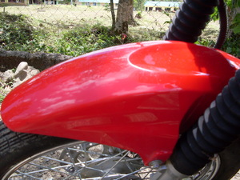
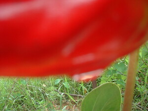
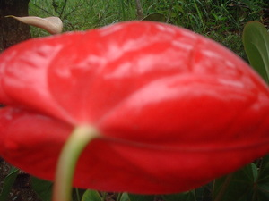
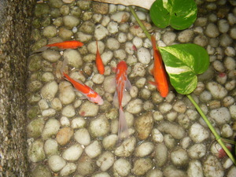

lalab    
/lalab/
adj_rt.
“red”
adj.
(malalab, mA1-) a color in the range from orange through to violet - this includes orange, pink, red, crimson, purple, violet
Neelin ne malalab ka kumbalè ku su amana a egkeupian a te malalab ne batek.
My clothes are all red for I really love red color.
Emun malalab ka langit ayew naa sika te mareet ne timpu.
When the sky is red that is bad omen of bad time.
Eng. orange; pink; red; crimson; purple; violet; color variety
Tag. pulá
Ceb. pula
Ilo.: nalabága
OCM: Decorative Art (deprecated) (531)
Online dict status: -
Usage level: B
v.
for the color (egmalalab, migmalalab/immalalab, agent, eg-mA1-) to become red
Eng. red, become to
DDP: Skin (2.1.4)
Online dict status: -
Usage level: M
adj.
(malalab-lalab, mA1-rdpRT-) very red
Eng. very red; red
DDP: Skin (2.1.4)
Online dict status: -
Usage level: M
v.
for an ironsmith (eglalaben, inlalab/miglalab/piglalab, theme, eg><en-) to heat on something
Wrd.Gloss: heat on
Ka eglalaben iyan ka pegtuug te minsan nekey diyè te hapuy eyew egmewumel wey egpeiniten iling te putew wey . Ka mannayab ka layun eggimu kayi emun ke egpanayab te putew eyew eggimuwen ne ugpit, puruk, ilab wey duma pad ne panganiban.
Eglalaben pad te mannayab ka putew eyew egmewumel ne egdekdeken.
The ironsmith will heat on the iron first so that it will be soft to crush.
Malalab naan dè iya ka putew ne inlalab.
The iron is redish which heated on fire.
Eng. roast; bake; burn; heat on
OCM: Metallurgy (325)
Online dict status: -
Usage level: M
adj.
(mallalab, mA1-rdpC-) many numbers of red
Eng. red, many
Online dict status: -
Usage level: M
Updated by: RJH,AAA,TME,QDL,NJK,QDL,RJH
Last updated: 08/Jun/2010
"malalab" in healthbook "Miggendiye te huspital si Mirsi ka migtibi"
"migmalalab" in healthbook "Ka an-anayan ne peg-uyamu ni Lolita te mig-anak"
"egmalalab" in healthbook "Ka an-anayan ne peg-uyamu ni Lolita te mig-anak"
This page last updated: 19/May/2012
Copyright © 2009-2010, Matigsalug Language Christian Association, Inc